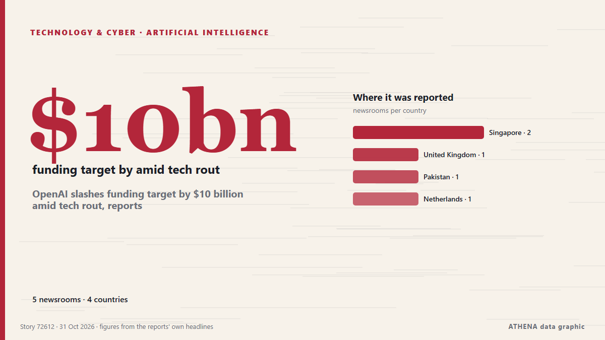

Τεχνητή νοημοσύνη
| 18 Οκτ | 0 |
|---|---|
| 19 Οκτ | 1 |
| 20 Οκτ | 0 |
| 21 Οκτ | 0 |
| 22 Οκτ | 0 |
| 23 Οκτ | 0 |
| 24 Οκτ | 0 |
| 25 Οκτ | 0 |
| 26 Οκτ | 3 |
| 27 Οκτ | 4 |
| 28 Οκτ | 4 |
| 29 Οκτ | 7 |
| 30 Οκτ | 4 |
| 31 Οκτ | 1 |
Οι τίτλοι των ειδήσεων παρουσιάζονται στα αγγλικά, όπως δημοσιεύτηκαν.

OpenAI slashes funding target by $10 billion amid tech rout, reports
OpenAI has slashed the target for its latest funding round by $10 billion amid a selloff in tech stocks driven by AI worries, the Financial Times reported on Friday, citing people with knowledge of… από Business Recorder
Reddit will make users log in as Google’s AI search cuts its traffic
Reddit is moving to a “logged-in-only experience”, chief executive Steve Huffman told shareholders on Thursday. από The Next Web
Foxconn chairman says new OpenAI tie-up is in the works, Reuters reports
Foxconn is working on a new partnership with OpenAI, chairman Young Liu told reporters in Taipei on Friday, Reuters reported. από The Next Web
Honda targets Level 4 autonomy by 2027, AI maps by 2030
Honda Motor plans to achieve Level 4 autonomous driving around 2027 and replace high-definition maps with AI technology around 2030, enabling Level 4 vehicles to navigate the narrow roads and… από DigiTimes Asia
The story of Anthropic in three numbers
IPO filing leaves open questions about the state of the company’s business and the wider sector. από Financial Times - Markets
Amazon sinks as AI spending eclipses fastest cloud growth in five years
Amazon, opens new tab on Thursday reported a massive cash burn in the third quarter, sending shares sharply lower, while it signaled higher capital expenditures next year atop an already huge amount… από FBC News
Nvidia, Meta partner on Muse agent as Nvidia invests $3 billion
Nvidia and Meta on Tuesday said they will partner to expand their work on Meta’s Muse assistant and the Muse family of models. από Business Recorder
Sam Altman's "Chronic Disappointment" In MBA Students
OpenAI CEO Sam Altman believes the AI boom is creating a rare opportunity for young professionals to build something new. από NDTV
Canada joins Nvidia in backing Cohere’s record C$7bn Series E
Cohere has completed the first close of its Series E round, which it aims to grow to as much as C$7bn. από The Next Web
Chinese markets lose trillions as race for AI supremacy with US takes its toll
Lack of profits and the threat posed by western countries are raising concern about the sustainability of Beijing’s AI boom Trillions of dollars have been wiped from China’s stock markets in recent… από The Guardian
Google unveils Gemini 4 Carbon AI model
The US internet giant described its latest AI offering as its strongest frontier model, with state-of-the-art cybersecurity and long-horizon capabilities. από Free Malaysia Today
Amazon launches Alexa Photo Frame, Echo Time smart clock as it refreshes Alexa device line-up
Amazon has put a camera in its Echo Studio speaker so that Alexa can see what is in front of it. από The Next Web
New York passes law restricting children’s use of AI chatbots
The law states that chatbots used by minors must not produce content that could lead users to believe they are 'human, alive or experience human emotions'. από Free Malaysia Today
Lenovo AI Express with NVIDIA accelerates path to Hybrid AI Factory in weeks
Lenovo announced Lenovo AI Express, a new accelerated path to production AI that removes deployment complexities by giving customers, from SMBs to enterprises, quicker return on their AI investment. από Business Review (Romania)
Oracle eases AI spending worries with plan to turn cash flow positive
Oracle said free cash flow will reach $30B in the year to May 2029, when analysts expected it to stay negative. από The Next Web
Cash is king as investors draw new battle lines in AI spending boom
Microsoft shares rose more than 3% in after-hours trading, while Alphabet plunged nearly 10%, as investors favoured companies profiting from AI over those struggling to contain its costs. από Free Malaysia Today
California governor signs orders to prepare for El Nino storms
California governor signs orders to prepare for El Niño storms. από CGTN (World)
SoftBank eyes US$50B Malaysia AI data-center expansion
SoftBank Group founder and CEO Masayoshi Son has selected investment sites in Malaysia and plans to invest US$50 billion in technology, Malaysian Prime Minister Anwar Ibrahim said. από DigiTimes Asia